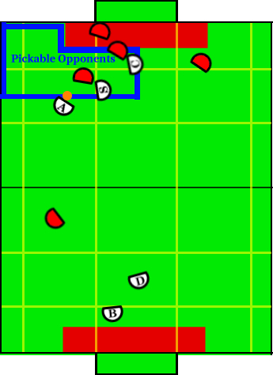

Play: Double Pick Offense
Description:
Transitioned to from single assist offensive, the special op creator and
creator work in tandem to pick two robots, allowing the aggressor to
dribbling around then and shoot on an open goal.
Illustration:

Positions Present:
- Blocker
- Defender
- Aggressor
- Creator
- Special Op Creator
Position Strategies:
Blocker + Defender:
Work together cutting down shots in same fashion as described in Loose Defense.
Blocker: TandemBlockerSkill
Defender: TandemDefenderSkill
|
Aggressor:
Utilizes dribble around double pick to
get around the special op creator and creator. If shot becomes available
play will transition to jam-and-shoot.
Aggressor: DribblePickScoreSkill
|
Special Op Creator + Creator:
These robots work in random to setup a double pick. First,
construct an array of opponent locations. Remove opponents that are in the
defense zone, are on the opposite side of the field than the ball
(widthwise), or are not behind the ball (see figure). Next order
the opponents from closest to farthest to the
opponent goal line by their x-coordinate. Picks are then constructed on
the inside edge (closer to center of field along width). Creator picks the
closest to the opponent goal and the special op creator picks the second
closest. This allows the aggressor to dribble around both picks to an open
other side of the field (or at least removing two robots from play), while
leaving the special op closer to the middle of the field allows him to
quickly become the special op aggressor and not have to cross pass the
creator at a later time. During picks both positions should always look
directly at the ball.
Special Op Creator: DoublePickBlockSkill
Creator: DoublePickBlockSkill
|
Transitions:
|
If the aggressor has an open shot on net, OR play timer has run past a certain
threshold.
|
Position Switching:
- Aggressor, Creator, SpecialOpCreator
|
- If special op farther upfield than creator, switch
- If creator or special op has possession of the ball and the aggressor does not,
switch with aggressor.
|
|